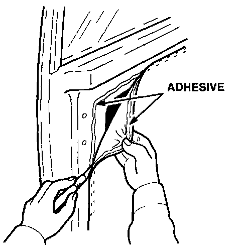
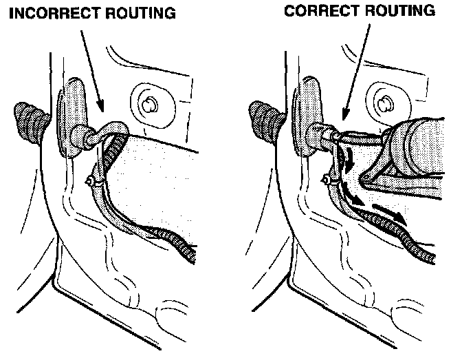
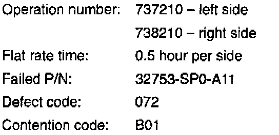

Rear Window - Inoperative
November 2, 1993BULLETIN NO.
93-021
YEAR
1991-93
MODEL
LEGEND 4-DOOR
VIN APPLICATION
ALL
Rear Window Inoperative
SYMPTOM
A rear window will not go up or down. Both the door switch and the switch on the master control panel are inoperative.
PROBABLE CAUSE
Corroded terminals in the wiring connector for the rear door.
CORRECTIVE ACTION
Clean and grease the connector terminals, and reroute the wiring harness.
1. Open the front door. Remove the rear door harness grommet from the B pillar.
2. Depress the clips and remove the white plastic connector holder from the B pillar.
3. Unplug the connector and examine the terminals for corrosion or damage.
^ If the terminals are corroded, remove them from the coupler and clean them with a stainless steel brush.
^ Replace any damaged pins. Use the terminals or pigtails and Terminal Kit B listed under PARTS INFORMATION.
4. Apply lithium dielectric grease (see RECOMMENDED MATERIALS) to the terminals. Reconnect the connector and reinstall the holder in the B pillar. Install the rubber grommet.
5. Open the rear door. Remove the door panel according to the instructions in section 20 of the appropriate service manual.

6. Peel back the rain protector along the front edge of the door by cutting the adhesive with a single-edged razor blade or sharp knife.

7. Disconnect the front harness mounting clip. Reposition the harness so it enters the harness boot at an upward angle as shown.
8. Pack the harness boot with lithium dielectric grease. Reconnect the harness mounting clip.
9. Install the rain protector and door panel. Verify window operation.
PARTS INFORMATION
Terminal Pin kit B: P/N 07QAZ-003020A
Male Terminal (for door side of connector): P/N 07JAZ-001030A
Female Terminal (for pillar side of connector): P/N 07JAZ-001040A
Pigtail with male terminal: P/N 04320-SP0-H00
Pigtail with female terminal: P/N 04320-SP0-B00
RECOMMENDED MATERIALS
Lithium Dielectric Grease: P/N 08798-9001

WARRANTY CLAIM INFORMATION
In warranty:
The normal warranty applies.
Out of warranty:
Any repair performed after warranty expiration may be eligible for goodwill consideration by the District Service Manager or your Zone Office. You must request consideration, and get a decision, before starting work.

Disclaimer